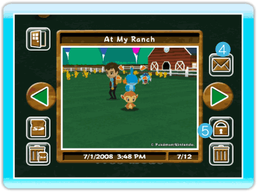
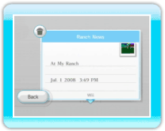

|
19
|
Album
|
 |
|
You can view the pictures you took at the Ranch or post
pictures to the Wii Message Board. You can save up to 20 pictures in
the Album. You can also save your pictures to an SD Card. Album
When you select "Album" under the main menu, an Album screen
will be displayed. When you want to move to a different picture,
point to the green arrow, press (left or
right),  Back
Exit the Album screen. Save to SD Card
Save the pictures from My Pokémon Ranch to an
SD Card (saves as jpegs). Delete all pictures on SD Card
Delete all of the My Pokémon Ranch pictures saved on the SD Card.  Post on the Wii Message Board
You can post and look at pictures on the Wii Message Board. Secure / Cancel Secure
You can secure or cancel secure on a picture. When you secure a picture, that picture won't be deleted. You can secure up to 19 pictures. Delete
You can delete the picture that is currently displayed. Notes about an SD Card
|
 , or .
, or . |
 |
 |